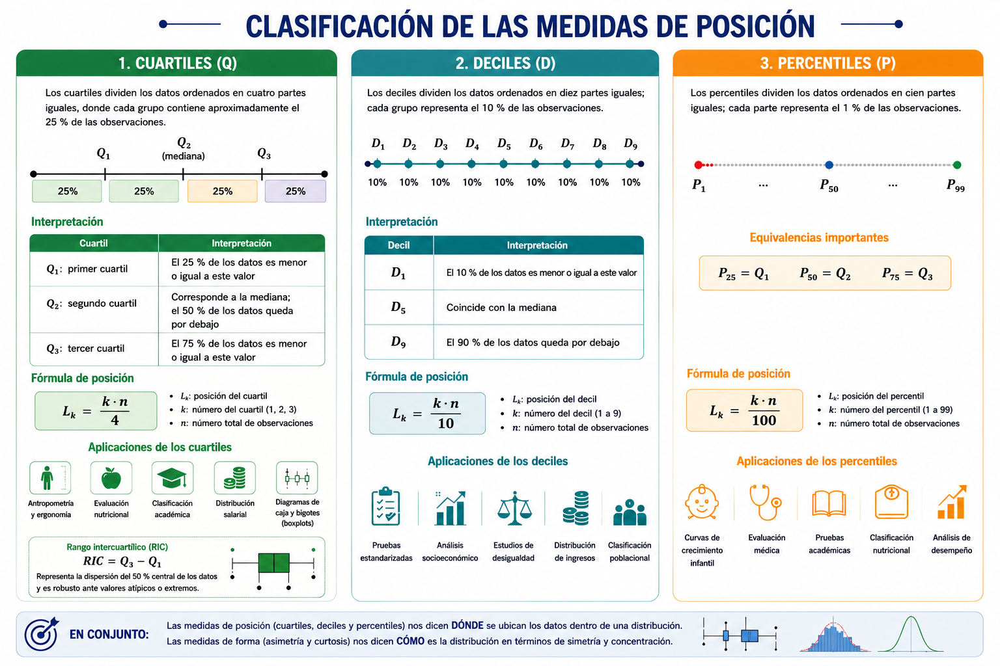
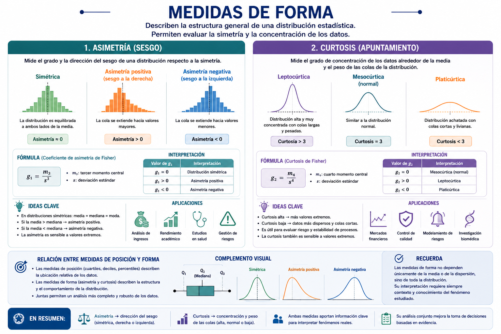

9 Medidas de posición y forma
Las medidas de posición y forma constituyen herramientas fundamentales de la estadística descriptiva, ya que permiten profundizar en la comprensión del comportamiento de una distribución de datos más allá de los valores centrales. Mientras las medidas de posición, como los cuartiles, deciles y percentiles, permiten determinar la ubicación relativa de una observación dentro de un conjunto ordenado de datos, las medidas de forma describen características estructurales de la distribución, tales como la simetría y el grado de concentración de las observaciones alrededor de la media.
El estudio conjunto de estas medidas facilita una interpretación más completa de los fenómenos analizados, permitiendo identificar patrones, desigualdades, concentraciones, sesgos y posibles valores extremos. Asimismo, conceptos asociados como el rango intercuartílico, los diagramas de caja y bigotes (boxplots), las curvas percentilares y los histogramas complementan el análisis estadístico mediante representaciones visuales que favorecen la interpretación de los datos.
Estas herramientas poseen amplias aplicaciones en contextos reales como el análisis del rendimiento académico, la clasificación de riesgo, la distribución salarial, los estudios antropométricos y las evaluaciones en salud pública, donde resulta esencial comprender no solo el valor promedio de una variable, sino también la posición relativa y la forma general de su distribución.
9.1 Medidas de posición
Las medidas de posición son indicadores estadísticos que permiten determinar la ubicación relativa de un valor dentro de un conjunto de datos ordenados. Estas medidas dividen la distribución en partes iguales y permiten identificar qué proporción de las observaciones se encuentra por debajo o por encima de un determinado valor.
A diferencia de las medidas de tendencia central, cuyo propósito es resumir el comportamiento típico de los datos mediante un único valor representativo, las medidas de posición permiten describir la distribución desde una perspectiva relativa o acumulativa.
Por ejemplo:
¿Qué valor deja por debajo al 25 % de las observaciones?
¿Cuál es el punto que supera el 90 % de la población?
¿En qué posición relativa se encuentra un estudiante respecto a sus compañeros?
Estas preguntas pueden responderse mediante cuartiles, deciles y percentiles.
9.2 Clasificación de las medidas de posición
Las principales medidas de posición son:
| Medida | División de los datos |
|---|---|
| Cuartiles | 4 partes iguales |
| Deciles | 10 partes iguales |
| Percentiles | 100 partes iguales |
Todas comparten la misma lógica matemática:
ordenar los datos;
calcular una posición;
identificar el valor correspondiente dentro de la distribución.
9.3 Cuartiles
Los cuartiles son medidas de posición que dividen un conjunto de datos ordenados en cuatro partes iguales, de tal manera que cada grupo contiene aproximadamente el 25 % de las observaciones. Se representan mediante:
| Cuartil | Interpretación |
|---|---|
| \(Q_1\): primer cuartil | El 25 % de los datos es menor o igual a este valor |
| \(Q_2\): segundo cuartil | Corresponde a la mediana; el 50 % de los datos queda por debajo |
| \(Q_3\): tercer cuartil | El 75 % de los datos es menor o igual a este valor |
9.3.1 Fórmula de posición
La posición del cuartil se calcula mediante:
\(L_k = \frac{k\cdot n}{4}\)
donde:
\(L_k\): posición del cuartil,
\(k\): número del cuartil,
\(n\): número total de observaciones.
Los cuartiles poseen amplias aplicaciones en diferentes áreas del conocimiento, debido a que permiten dividir una distribución de datos en cuatro partes iguales y analizar la posición relativa de las observaciones dentro de un conjunto ordenado. En estudios antropométricos y ergonómicos, por ejemplo, los cuartiles se utilizan para diseñar mobiliario y espacios adaptados a las características físicas de la población. De igual manera, en evaluación nutricional permiten clasificar individuos según variables como peso, talla o índice de masa corporal.
En el ámbito educativo, los cuartiles facilitan la clasificación académica y la comparación del desempeño relativo de los estudiantes dentro de un grupo. Asimismo, en economía y ciencias sociales son empleados para estudiar la distribución salarial y analizar desigualdades entre diferentes segmentos de la población.
Los cuartiles también constituyen la base de los diagramas de caja y bigotes (boxplots), una representación gráfica ampliamente utilizada para visualizar la distribución de los datos, identificar valores extremos y evaluar la variabilidad de una muestra.
A partir de los cuartiles puede calcularse el rango intercuartílico (RIC), definido como la diferencia entre el tercer y el primer cuartil:
\(RIC = Q_3 - Q_1\)
Esta medida representa la dispersión del 50 % central de los datos y resulta especialmente útil porque no se ve afectada significativamente por valores atípicos o extremos.
9.4 Deciles
Los deciles son medidas de posición que dividen un conjunto de datos ordenados en diez partes iguales, de manera que cada grupo representa el 10 % de las observaciones. Se denotan como:
| Decil | Interpretación |
|---|---|
| \(D_1\) | El 10 % de los datos es menor o igual a este valor |
| \(D_5\) | Coincide con la mediana |
| \(D_9\) | El 90 % de los datos queda por debajo |
9.4.1 Fórmula de posición
\(L_k = \frac{k\cdot n}{10}\)
9.5 Aplicaciones de los deciles
Los deciles se utilizan frecuentemente en:
pruebas estandarizadas,
análisis socioeconómico,
estudios de desigualdad,
distribución de ingresos,
clasificación poblacional.
9.6 Percentiles
Los percentiles son medidas de posición que dividen un conjunto de datos ordenados en cien partes iguales, donde cada parte representa el 1 % de las observaciones. Se representan mediante: \(P_1, P_2, P_3, \dots, P_{99}\). El percentil\(P_k\) indica que el \(k\%\) de las observaciones es menor o igual a dicho valor. Por ejemplo:
\(P_{25} = Q_1\)
\(P_{50} = Q_2\)
\(P_{75} = Q_3\)
9.6.1 Fórmula de posición
\(L_k = \frac{k\cdot n}{100}\)
9.6.2 Aplicaciones de los percentiles
Los percentiles son fundamentales en curvas de crecimiento infantil, evaluación médica, pruebas académicas, clasificación nutricional, análisis de desempeño, entre otras (Figura 9.1).

9.7 Medidas de forma
Las medidas de forma permiten describir la estructura general de una distribución estadística, evaluando características como: simetría, concentración, colas extremas, comportamiento alrededor de la media. Las principales medidas de forma son: asimetría y curtosis (Figura 9.2).
9.7.1 Asimetría
La asimetría evalúa el grado de sesgo de una distribución.
| Tipo | Característica |
|---|---|
| Simétrica | Ambos lados son similares |
| Asimetría positiva | Cola hacia la derecha |
| Asimetría negativa | Cola hacia la izquierda |
9.7.2 Curtosis
La curtosis describe el grado de concentración de los datos alrededor de la media.
| Tipo | Característica |
|---|---|
| Leptocúrtica | Distribución alta y concentrada |
| Mesocúrtica | Similar a distribución normal |
| Platicúrtica | Distribución achatada |

9.8 Actividad experiencial
9.8.1 Explorando medidas de posición y forma con datos antropométricos
En los estudios poblacionales y de salud, las medidas de posición y forma permiten comprender cómo se distribuyen los datos dentro de una muestra. Estas herramientas facilitan identificar concentraciones de observaciones, simetrías, asimetrías y posibles valores extremos, aspectos fundamentales para interpretar adecuadamente fenómenos biológicos y sociales.
En esta actividad, los estudiantes asumirán el rol de analistas de datos biomédicos, utilizando una base de datos antropométrica de estudiantes universitarios para explorar el comportamiento de variables corporales mediante percentiles, cuartiles, asimetría y curtosis.
Objetivo: Al finalizar esta actividad, el estudiante estará en capacidad de calcular e interpretar medidas de posición y forma, identificar patrones de distribución y analizar el comportamiento de variables antropométricas utilizando R.
Parte 1. Exploración inicial de la base de datos
Instrucciones
Cargue la base de datos antropométrica.
Explore las variables disponibles.
Identifique las variables cuantitativas relacionadas con medidas corporales.
Parte 2. Medidas de posición y forma
Instrucciones
Calcule los cuartiles y percentiles de la variable IMC.
Calcule la asimetría y curtosis de la variable IMC.
Preguntas de análisis
¿Cuál es el valor de la mediana del IMC?
¿Qué significa el percentil 90?
¿Qué porcentaje de estudiantes presenta un IMC inferior al tercer cuartil?
¿La distribución parece concentrarse en valores bajos, medios o altos?
Parte 4. Visualización e interpretación
Instrucciones
Construya un histograma y un boxplot para evaluar visualmente la distribución del IMC.
Parte 5. Interpretación estadística
Responda:
¿La distribución del IMC presenta asimetría positiva o negativa?
¿Existen posibles valores atípicos?
¿La distribución parece concentrada o dispersa?
¿Qué información aporta el boxplot respecto a la mediana y los cuartiles?
¿Considera que el IMC de los estudiantes presenta comportamiento homogéneo o heterogéneo?
9.9 Mini reto analítico
Imagine que usted trabaja en el área de bienestar universitario y debe realizar un informe sobre el estado nutricional de los estudiantes.
Con base en los resultados obtenidos:
¿qué hallazgos relevantes comunicaría?
¿qué indicadores utilizaría para resumir la información?
¿qué grupo considera prioritario para intervención?
¿qué limitaciones presenta el análisis realizado?
Conclusión: Las medidas de posición y forma permiten comprender cómo se distribuyen los datos más allá del promedio. Estas herramientas facilitan identificar concentraciones, dispersión, asimetrías y comportamientos atípicos dentro de una población, fortaleciendo la interpretación estadística y la toma de decisiones basadas en evidencia.